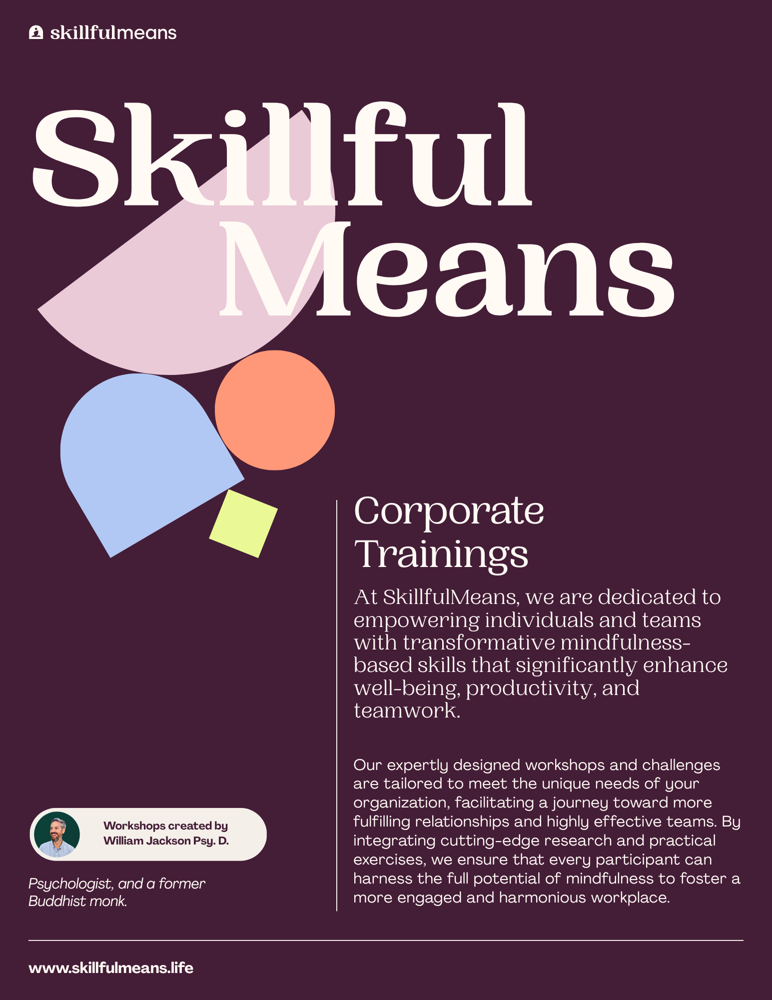

Mental Fitness for Healthcare Cost Reduction
Addressing the "Pre-Patient" crisis through clinical-grade Emotional Resilience interventions to intercept high-cost medical events.
The Cost of Inaction
Unaddressed distress predictably escalates into high-cost medical events. Employees with poor Emotional Resilience have 12 unplanned absences annually. [Study 29]
The "Pre-Patient" Escalation
Without upstream intervention, unmanaged stress predictably escalates into a high-cost physical claim.
1. Sub-Clinical Distress
Employee experiences chronic stress, anxiety, or burnout.
2. Somatic Symptoms
Manifestation of physical symptoms (e.g., insomnia, GI issues).
3. High-Cost Medical Claim
Results in expensive ER visits, hospital admissions, or prolonged claims.
per $1 Spent
(If caught early)
Liability Severity Multiplier
Psychosocial factors dictate recovery speed. Claims with behavioral health comorbidities cost 2x to 4x more. [Study 60]
3x Standard Length
Unmanaged Mental Health triples the time a claimant stays out of the workforce.
60-70% Recovery
Addressing Resilience within 90 days drastically reduces total settlement costs.
Claims Mitigation Strategy Tool
Translate clinical ROI metrics into a localized financial model for your clients.
What is it?
This tool translates the Baicker Harvard Study ($3.27 ROI) into a financial projection engine to justify Mental Fitness investment, splitting returns into two distinct buckets.
How to use it?
Audit: Contact the carrier to identify unused "use-it-or-lose-it" wellness dollars for the client.
Input: Adjust the Total Wellness Fund slider below (typically between $5k and $100k).
Present: Use the 3-year stacked curve to show the CFO a legitimate Claims Mitigation Strategy.
The "Shift" Result
Successful Workforce Mental Health programs result in Care Channel Shifting, moving users away from high-cost ER visits.
Proving the ROI: Clinical Data
Clinical foundations for reducing healthcare utilization in high-acuity environments.
AHA: 75% Reduction
Heart disease patients receiving Mental Fitness treatment were 75% less likely to be rehospitalized than those who did not. [Study 23]
Channel Shift Success
Engagement shifts staff from high-cost reactive care to low-cost proactive support, resulting in $2,304 lower medical spend per person. [Study 36]
Strategic Study Library
Foundational research for Clinical-to-Corporate translation.
Harvard Medical ROI Study
Baicker, K., et al. (2010).
Medical costs fall by $3.27 for every dollar spent on evidence-based interventions.
The Lancet 4:1 ROI
Chisholm, D., et al. (2016).
Evaluation across 36 countries, finding consistent 4:1 returns on Mental Fitness scaling.
Stress Cost Review
Hassard, J., et al. (2018).
Proved stress claims result in 3x longer worker absences than standard physical sprains.
Baum Corporate Analysis
Baum & Song (2023).
Study finding $2,304 lower medical spending per year through care channel shifting.
Partner With SkillfulMeans
Bring clinical-grade Mental Fitness to your corporate clients.

Download Our Corporate Brochure
Explore our comprehensive suite of interactive wellness workshops, 14-day team challenges, and leadership EQ programs designed to build emotional resilience and reduce healthcare utilization.